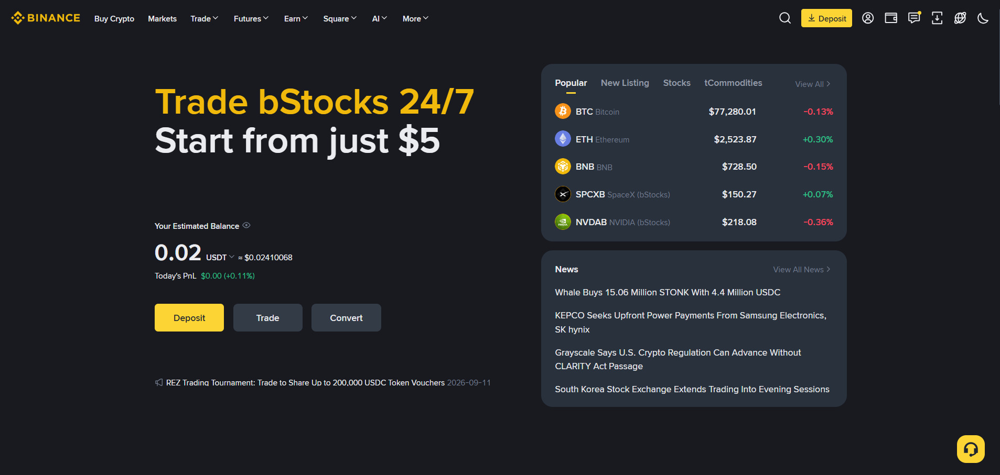
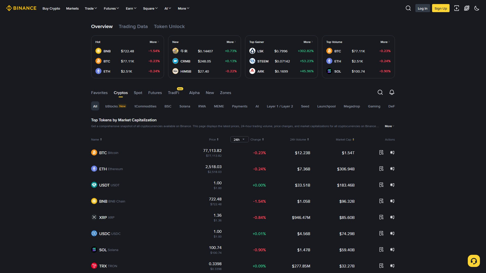

بائننس کا ہوم پیج آپ کا ڈیش بورڈ ہے۔ یہاں ہر بٹن، ہر لنک اور ہر آئیکن کی ایک مخصوص جگہ اور ایک مخصوص کام ہے۔ یہ باب آپ کو ہوم پیج کا مکمل نقشہ فراہم کرتا ہے تاکہ آپ کبھی گم نہ ہوں — اور یہ جان لیں کہ کون سا بٹن آپ کے پیسوں سے جڑا ہے، اور کون سا صرف معلومات دیتا ہے۔

جب آپ بائننس پر لاگ اِن ہوتے ہیں تو ہوم پیج تین بنیادی حصوں میں تقسیم ہوتا ہے۔ یہ تقسیم ہر ڈیوائس پر یکساں رہتی ہے:
┌──────────────────────────────────────────────────────────────┐
│ 🔶 BINANCE Buy Crypto ▾ Markets ▾ Trade ▾ Earn ▾ │
│ Futures Wallet ▾ 🔔 👤 ▾ 🌐 │
├──────────────────────────────────────────────────────────────┤
│ ═══ HERO BANNER ═══ │
│ آن گوئنگ پرومو / ایئر ڈراپ / نئی لسٹنگ کا اعلان │
├──────────────────────────────────────────────────────────────┤
│ 🔍 Search Markets │ 🏆 Top Gainers / Trending │
│ ───────────────────────────── │ ───────────────────────── │
│ BTC/USDT $ ... ▲ / ▼ │ 🔥 Trending │
│ ETH/USDT $ ... ▲ / ▼ │ 📈 Top Gainers │
│ BNB/USDT $ ... ▲ / ▼ │ 📉 Top Losers │
│ SOL/USDT $ ... ▲ / ▼ │ 💧 Highest Volume │
├──────────────────────────────────────────────────────────────┤
│ ┌────────────┐ ┌────────────┐ ┌────────────┐ ┌────────────┐ │
│ │ Trade │ │ Earn │ │ Futures │ │ Square │ │
│ │ Spot/P2P │ │ Flexible │ │ Leverage │ │ Social │ │
│ └────────────┘ └────────────┘ └────────────┘ └────────────┘ │
├──────────────────────────────────────────────────────────────┤
│ 📰 News & Updates │ 🎓 Learn & Explore │
│ Binance Blog, Academy │ Academy, Research, Help Center │
└──────────────────────────────────────────────────────────────┘| حصہ | کیا ہے | کس کام آتا ہے |
|---|---|---|
| اوپر نیویگیشن بار | Buy Crypto، Markets، Trade، Earn، Futures، Wallet | کسی بھی سیکشن میں جانے کا راستہ |
| مرکزی محور | سرچ، مارکیٹ ٹیبل، ٹرینڈنگ | قیمتیں دیکھنا اور ٹریڈنگ شروع کرنا |
| نیچلے کارڈز | فیچر کارڈز، خبریں، تعلیم | نئے فیچرز دریافت کرنا |
💡 اہم اصول: بائننس اپنا انٹرفیس ہر چند ماہ بعد اپ ڈیٹ کرتا ہے۔ بٹنوں کی جگہ بدل سکتی ہے، مگر ان کے نام اور کام وہی رہتے ہیں۔ اس لیے نقشے (map) کو یاد رکھیں، نہ کہ پکسل کی جگہ کو۔
| قسم | مثال | احتیاط |
|---|---|---|
| معلومات (Info) | قیمتیں، چارٹ، خبریں | ✅ دیکھنے میں کوئی خطرہ نہیں |
| کارروائی (Action) | Buy Crypto، Trade، Withdraw | ⚠️ یہ پیسوں سے جڑے ہیں — سوچ کر کلک کریں |
🎯 طلائی اصول: ہوم پیج پر ہر چیز کو ایک بار دیکھیں، مگر کارروائی والے بٹن صرف تب دبائیں جب آپ جانتے ہوں کہ کیا ہوگا۔
تین بڑے راستے:
| اختیار | کیا کرتا ہے | کس کے لیے بہتر |
|---|---|---|
| Credit/Debit Card | کارڈ سے فوری خریداری | فوری، سادہ خریداری (فیس زیادہ) |
| P2P Trading | مقامی بیچنے والوں سے | PKR میں، بینک/ایزی پیسہ (باب 12) |
| Bank Deposit | بینک ٹرانسفر سے | بڑی رقم، کم فیس |
💡 پاکستان میں: P2P سب سے عام اور عملی طریقہ ہے۔ کارڈ سے خریداری ممکن ہے مگر فیس اور اسپریڈ زیادہ ہوتا ہے۔
یہاں تمام ٹریڈنگ پیئرز کی فہرست ہے:
| ذیلی سیکشن | مقصد |
|---|---|
| All Markets | تمام کوائنز اور ان کی قیمتیں |
| Favorites | آپ کے پسندیدہ کوائنز (⭐) |
| Spot | سپاٹ مارکیٹس |
| Futures | فیوچرز مارکیٹس |
| New Listings | نئی لسٹ شدہ کوائنز |
| Zones | مخصوص زمرے (DeFi، Gaming، AI وغیرہ) |

| اختیار | کیا ہے | باب |
|---|---|---|
| Convert | ایک کوائن کو دوسرے میں سادہ تبدیلی | 11 |
| Spot | بنیادی خرید/فروخت (مکمل چارٹ کے ساتھ) | 10 |
| Margin | ادھار (Leverage) کے ساتھ ٹریڈنگ | 14 |
| Futures | فیوچرز کانٹریکٹس (USDM / COINM) | 15-16 |
| P2P | پیئر ٹو پیئر ٹریڈنگ | 12 |
| Copy Trading | ماہر ٹریڈرز کی نقل | 36 |
| Trading Bots | خودکار بوٹس (Grid، DCA) | 34 |
| Strategy Trading | خودکار حکمت عملیاں | 34 |
| اختیار | قسم | فائدہ |
|---|---|---|
| Simple Earn — Flexible | لچکدار | روزانہ منافع، جب چاہیں نکالیں |
| Simple Earn — Locked | مقررہ مدت | زیادہ منافع، قید کی شرط |
| Staking | اسٹیکنگ | PoS نیٹ ورک کے انعام |
| Dual Investment | دوہرا سرمایہ کاری | زیادہ ممکنہ منافع، زیادہ خطرہ |
| Launchpool | نئی لسٹنگ | اسٹیک کر کے نئے ٹوکنز |
| اختیار | کیا ہے |
|---|---|
| Overview | تمام اثاثوں کا مجموعی جائزہ |
| Spot Account | ڈپازٹ / وائیدراول / ٹرانسفر |
| Futures Account | فیوچرز بیلنس |
| Earn Account | اسٹیکنگ اور ایرن اثاثے |
| Transaction History | تمام ٹرانزیکشنز کی تاریخ |
⚠️ دھیان رکھیں: نیویگیشن بار کبھی کبھار "More" یا "•••" مینو کے پیچھے چھپ جاتی ہے، عموماً موبائل یا کم چوڑائی والی ونڈو پر۔ اگر کوئی اختیار نظر نہ آئے تو اس کے پیچھے دیکھیں۔
ہوم پیج کے مرکزی حصے میں زندہ (live) قیمتیں چلتی رہتی ہیں:
BTC/USDT $ 96,250.40 ▲ 2.34%
ETH/USDT $ 3,410.75 ▲ 1.12%
BNB/USDT $ 720.18 ▲ 0.85%
SOL/USDT $ 198.62 ▼ 1.20%| حصہ | مطلب | مثال |
|---|---|---|
| BTC/USDT | بیس (Base) / کوٹ (Quote) جوڑا | BTC کی قیمت USDT میں |
| $ 96,250.40 | آخری ٹریڈ کی قیمت (Last Price) | موجودہ مارکیٹ ریٹ |
| ▲ 2.34% | 24 گھنٹے کا تبدیلی | سبز = اوپر، سرخ = نیچے |
| Volume | 24 گھنٹے کا کاروباری حجم | مارکیٹ کی سرگرمی |
💡 نوٹ: اوپر دی گئی قیمتیں صرف مثال ہیں۔ کرپٹو مارکیٹ 24/7 چلتی ہے، اس لیے بائننس پر ہمیشہ اصل، زندہ قیمت دیکھیں — کتاب میں لکھی کوئی قیمت فوراً پرانی ہو جاتی ہے۔
BTC/USDT جوڑے میں:
- BTC = Base (بنیادی کرنسی — جو خریدی/بیچی جاتی ہے)
- USDT = Quote (قیمتی کرنسی — جس میں قیمت دکھائی دیتی ہے)
جب آپ Buy دیتے ہیں، تو آپ USDT دے کر BTC لیتے ہیں۔ جب Sell دیتے ہیں، تو BTC دے کر USDT لیتے ہیں۔
| فہرست | کیا دکھاتا ہے | ⚠️ غلط فہمی |
|---|---|---|
| 🔥 Trending | سب سے زیادہ تلاش/سرچ ہونے والے کوائنز | ❌ یہ سگنل نہیں ہے |
| 📈 Top Gainers | 24 گھنٹے میں سب سے زیادہ اوپر | ❌ اکثر بعد میں گرتے ہیں |
| 📉 Top Losers | 24 گھنٹے میں سب سے زیادہ نیچے | ❌ "سستا ہے" کا مطلب خریداری نہیں |
| 💧 Highest Volume | سب سے زیادہ ٹریڈ ہونے والے | ✅ Liquidity کا اشارہ |
⚠️ سب سے بڑی غلطی: "Top Gainers" دیکھ کر فوراً خرید لینا۔ جو کرنسی 24 گھنٹے میں 50% اوپر گئی ہے، وہ اکثر واپس گرتی ہے — کیونکہ وہ منافع لینے والوں کی فروخت کا شکار ہوتی ہے۔ FOMO (ڈر کہ پیچھے رہ جائیں گے) سے بچیں۔
Earn آپ کو بغیر ٹریڈ کیے منافع کمانے دیتا ہے — بالکل بینک کے بچت کھاتے کی طرح، مگر اکثر زیادہ شرح پر۔
| قسم | وضاحت | منافع کی شرح |
|---|---|---|
| Flexible | جب چاہیں نکالیں | کم لیکن آسان |
| Locked | طے شدہ مدت کے لیے | زیادہ |
| Auto-Invest | خودکار سرمایہ کاری (DCA) | مارکیٹ کی اوسط |
| Dual Investment | دو نتیجہ کے ساتھ | زیادہ ممکن لیکن خطرناک |
📖 تفصیلی گائیڈ: باب 40 (Simple Earn) اور باب 38 (Staking)
📖 تفصیلی گائیڈ: باب 37 (Launchpad) اور باب 57 (Megadrop)
📖 تفصیلی گائیڈ: باب 58 (NFT Marketplace)
📖 تفصیلی گائیڈ: باب 59 (Binance Square)
📖 تفصیلی گائیڈ: باب 52 (Binance Pay)
⚠️ بائننس کا ہوم پیج خود محفوظ ہے — مگر کچھ چیزیں آپ کو غلط فیصلے پر آمادہ کر سکتی ہیں۔
| عنصر | خطرہ | سے بچاؤ |
|---|---|---|
| "Urgent" پروموشن | FOMO پیدا کرنا | سات دن سوچیں، پھر فیصلہ |
| Top Gainers | بعد میں گرنا | تحقیق کیے بغیر مت خریدیں |
| "آخری موقع" بینرز | جلدی فیصلہ | کوئی آخری موقع نہیں ہوتا |
| Square پر "سگنل" | دھوکے باز | کسی پر بھروسہ مت کریں |
| ئیر ڈراپ کے وعدے | نجی معلومات مانگنا | کبھی پاس ورڈ/2FA مت دیں |
🔐 یاد رکھیں: بائننس کا ہوم پیج ہر وقت نئے پروموشنز دکھاتا ہے۔ یہ ڈیزائن میں ہے — تاکہ آپ زیادہ ٹریڈ کریں۔ اسے معلومات کے طور پر دیکھیں، ہدایت کے طور پر نہیں۔
| پہلو | ویب سائٹ (Desktop) | موبائل ایپ |
|---|---|---|
| لے آؤٹ | پوری چوڑائی، ایک ساتھ بہت کچھ | کمپیکٹ، نیچے نیویگیشن |
| نیویگیشن | اوپر والی بار | نیچے کی بار (Bottom Nav) |
| چارٹ | مکمل ٹرمنل | سادہ، کوچ کا آلہ |
| بہترین استعمال | تفصیلی تجزیہ، آرڈرز | فوری نظر، P2P، الرٹس |
💡 مشورہ: سنجیدہ ٹریڈنگ اور تجزیے کے لیے ڈیسک ٹاپ بہتر ہے، جبکہ فوری قیمت چیک کرنے اور P2P کے لیے موبائل ایپ بہت مناسب ہے۔
📖 موبائل ایپ کی تفصیل: باب 41-45 (موبائل سیکشن)
🎯 یہ چیک لسٹ آپ کے پہلے دن کے لیے ہے۔ 20 منٹ میں مکمل ہو جائے گی۔
| # | کام | وقت |
|---|---|---|
| 1 | ہوم پیج کا بوک مارک کریں (بان 4) | 30 سیکنڈ |
| 2 | بیرونی نظر ڈالیں — نیویگیشن بار، ٹکرز، کارڈز | 2 منٹ |
| 3 | Markets کھولیں — 5 کوائنز دیکھیں (BTC, ETH, BNB, SOL, USDT) | 3 منٹ |
| 4 | Favorites میں 3 کوائنز شامل کریں (⭐) | 1 منٹ |
| 5 | Trade → Spot کھولیں — صرف چارٹ دیکھیں (آرڈر مت دیں) | 5 منٹ |
| 6 | Earn کھولیں — Flexible کی شرح دیکھیں | 2 منٹ |
| 7 | Wallet → Overview دیکھیں — کون سے وولیٹس موجود | 2 منٹ |
| 8 | 🔔 نوٹیفیکیشن کی سیٹنگز چیک کریں | 1 منٹ |
| 9 | 🌐 زبان آپ کی پسند کے مطابق سیٹ کریں | 1 منٹ |
✅ پہلے دن کے بعد: آپ کو بائننس کا نقشہ یاد ہو جائے گا۔ اب باب 6 میں ٹریڈ مینو کی گہرائی میں جائیں۔
www.binance.com یا سرکاری ایپ استعمال کریں۔www.binance.com پر جا کر لاگ اِن کریں (یا باب 2 کے مطابق اکاؤنٹ بنائیں)۔ہوم پیج ایک شہر کا نقشہ ہے۔ جیسے نقشہ آپ کو گم نہیں ہونے دیتا، ویسے ہی بائننس کا ہوم پیج ہر چیز کی جگہ بتاتا ہے۔ بٹنوں کی پوزیشن بدل سکتی ہے، مگر ان کے نام اور کام وہی رہتے ہیں۔ نقشے کو یاد رکھیں — پکسل کو نہیں۔
اور یہ کہ نقشہ آپ کو راستہ دکھاتا ہے، منزل کا فیصلہ آپ کو خود کرنا ہے۔ جو بھی کارروائی پیسوں سے جڑی ہو — پہلے سوچیں، پڑھیں، پھر کلک کریں۔